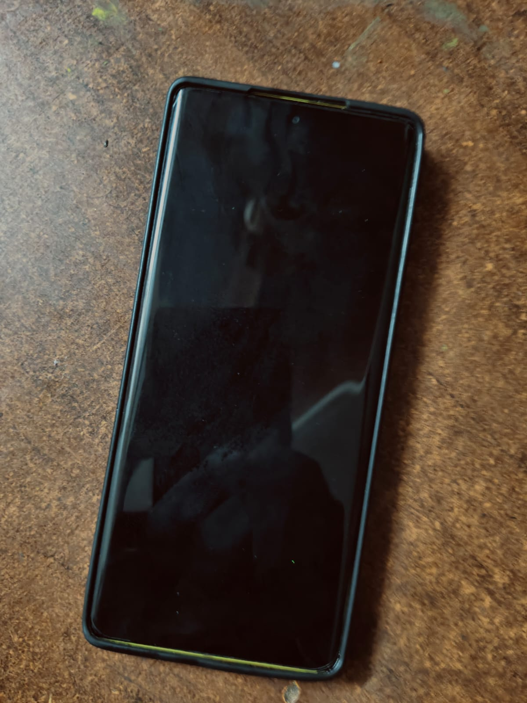
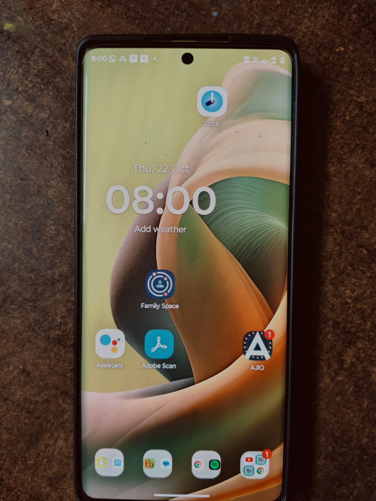

Introduction

my smart phone is important part of my daily life.I use it for communication, education.
I use my phone for about 4 to 5 hours.
My Daily Routine
My Morning Routine
One short sentence introducing the list.
- my phone helps me organise my morning
- to stay informed
Afternoon and Evening
use to check updates on my friends and society
Apps I Use Most
My Top Apps
- App 1: Instagram
- App 2: youtube
- App 3: spotify
- App 4: snapchat

How My Phone Helps with Studies
I use it to acess online materials, download notes,and watch educational videos.
To understand more about the device itself, read this Wikipedia article on smartphones.
My Daily Usage at a Glance
| Time of Day | App | Purpose | Minutes |
|---|---|---|---|
| Morning | check updates | 10 | |
| Afternoon | Youtube | a study session | 60 |
| Evening | free time | 30 | |
| Night | spotify | relaxation | 30 |
Habits I Want to Improve
I want to set daily screen time limits
Conclusion
YOUR CONCLUSION: Should maintain balance between online and offline activities.
You can find my other work on my GitHub profile.